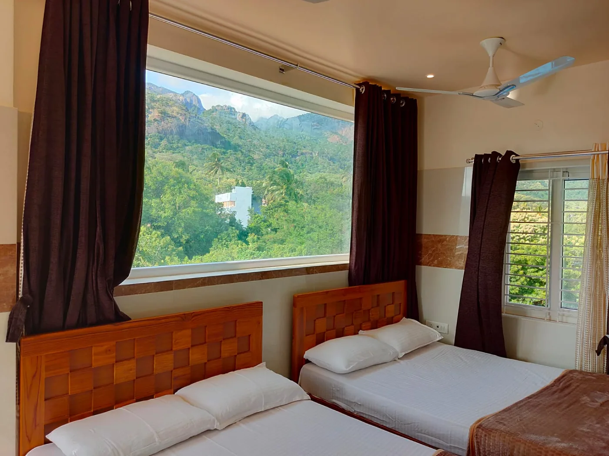
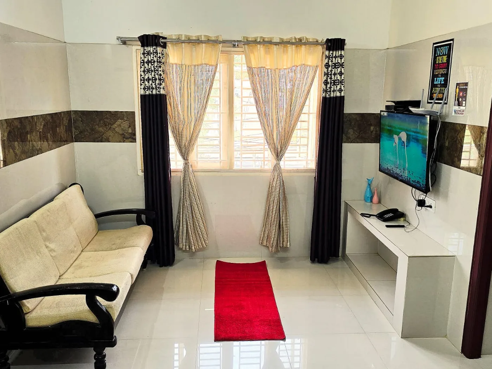
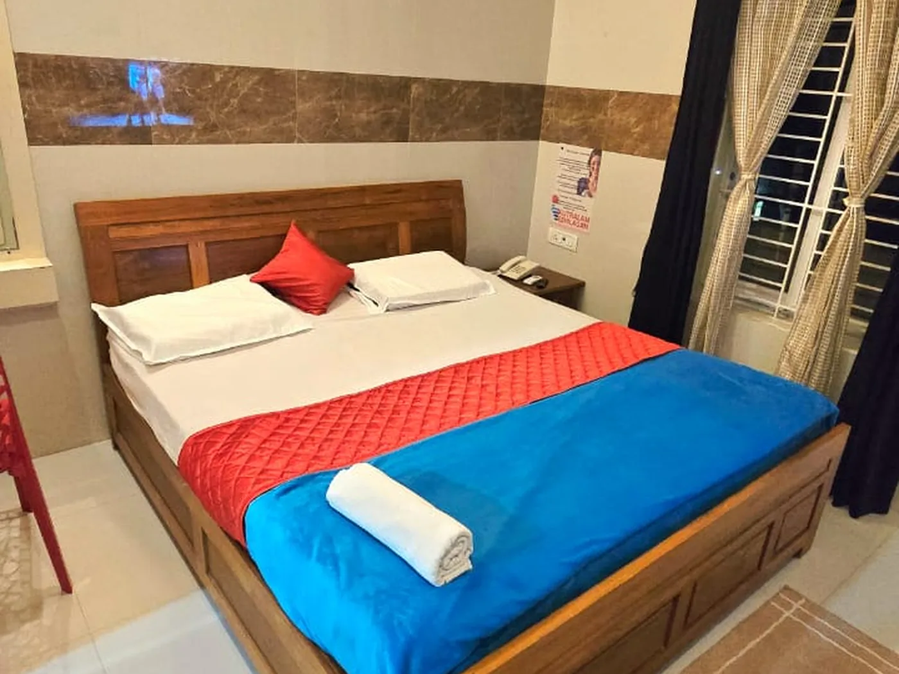

Hill-view rooms
Wide picture windows on to the Courtallam hills and forest. Ground, first and second floors, with balconies over the grounds.
Kutralam Ezhilagam · Courtallam
Welcome
Nine rooms — studios and suites sleeping two to fifteen — in Vairams Nagar on Five Falls Road. Wake up to the hills, relax with your family on the spacious rooftop terrace in the evening, and walk to the falls.

Wide picture windows on to the Courtallam hills and forest. Ground, first and second floors, with balconies over the grounds.

A spacious open terrace under a pergola for the whole family to relax together, with soft ambient lights in the evening and the hills all around.

A sitting room with sofa and television and the bedroom beyond. One suite has its own kitchen; the largest sleeps fifteen.

Teak beds and fresh linen, air conditioning where you want it, and 24/7 power backup.
Our rooms
You'll see the rooms free for your dates next, then pay a small advance by UPI or card.
Courtallam · near the Main Falls
Nine rooms — studios and suites, sleeping two to fifteen — a short walk from the Main Falls. Book direct, or ask Shenba in Tamil or English.
Justdial Users' Choice 2025. Nine rooms — studios and suites, sleeping two to fifteen — a short walk from the Main Falls.